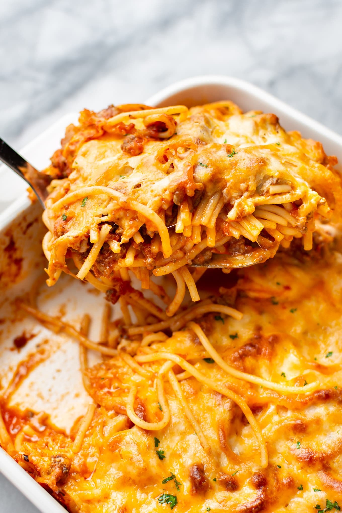

Baked Spaghetti

Description
You make baked spaghetti almost the same way you would make lasagna. It's a layered, baked casserole with a tomato-based meat sauce, mozzarella, ricotta, and Parmesan cheeses, and pasta.
The main differences are that you use thin spaghetti noodles instead of wide lasagna pasta, and you toss in a couple of beaten eggs with the cooked noodles.
The eggs help bind the noodles in place so you can easily cut and serve even rectangles without them falling apart.
It's the perfect thing to serve the hungry family visiting for spring break, who somehow manages to eat their weight every day, and get into all kinds of crazy antics.
Ingredients
- 16 ounces dry spaghetti
- 1/4 cup fresh parsley
- 1 1/2 cups mozzarella cheese shredded
- 1/3 cup fresh parmesan cheese shredded
Sauce
- 1 pound ground beef or italian sausage
- 1 small onion diced
- 2 cloves garlic minced
- 1 1/2 teaspoons Italian seasoning
- 1/2 teaspoon salt or to taste
- 1 green pepper diced
- 32 ounces pasta sauce
- 14.5 ounces diced tomatoes
Instructions
- Preheat the oven to 375°F.
- In a large pot of salted water, cook the spaghetti al dente according to package directions.
- In a large skillet over medium heat, brown the meat, onion, garlic, seasoning, and green pepper while breaking up the meat. Drain fat if needed.
- Stir in the pasta sauce, Italian seasoning, and tomatoes to the meat. Simmer uncovered for 5 to 10 minutes or until thickened. Stir in the cooked spaghetti and parsley.
- Transfer the mixture to a 9×13 pan, top with cheeses, and bake for 25-30 minutes or until hot and the cheese is browned and bubbly. Cut into squares to serve.